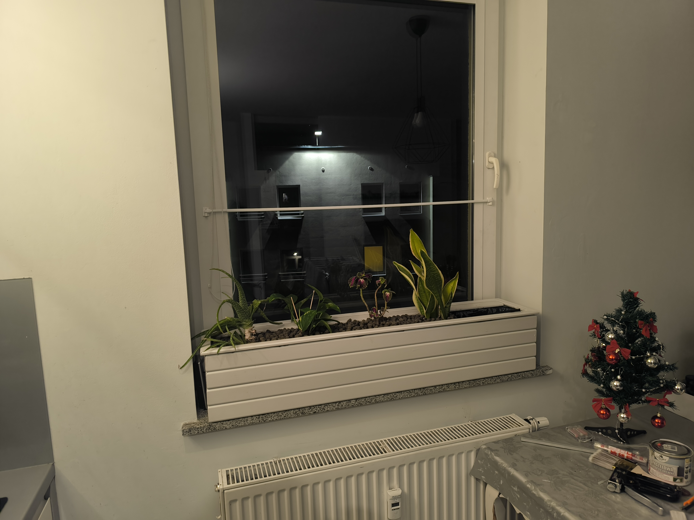
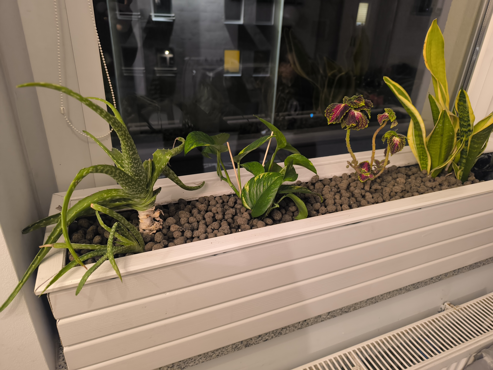
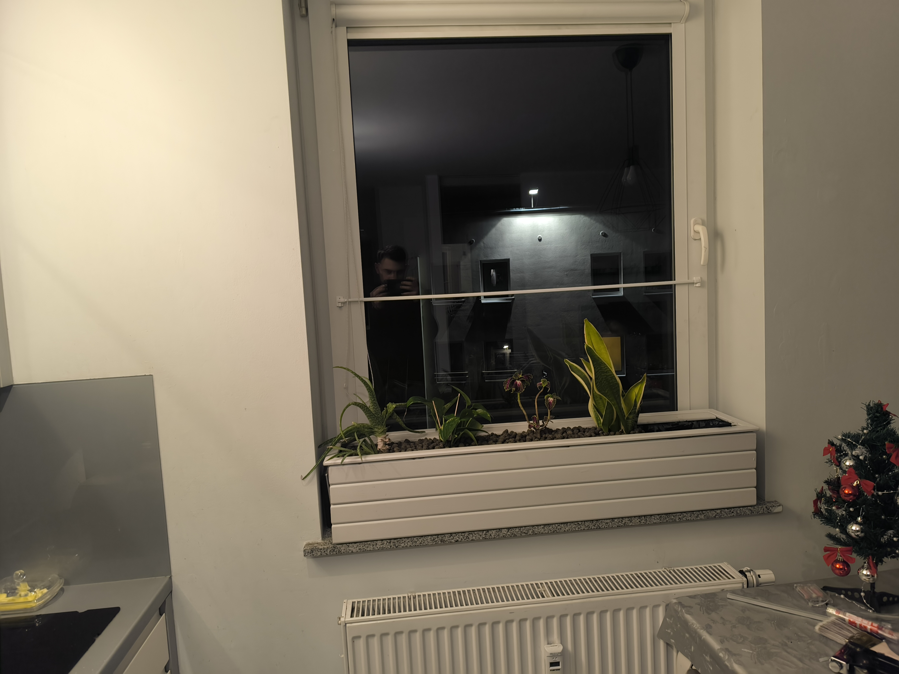
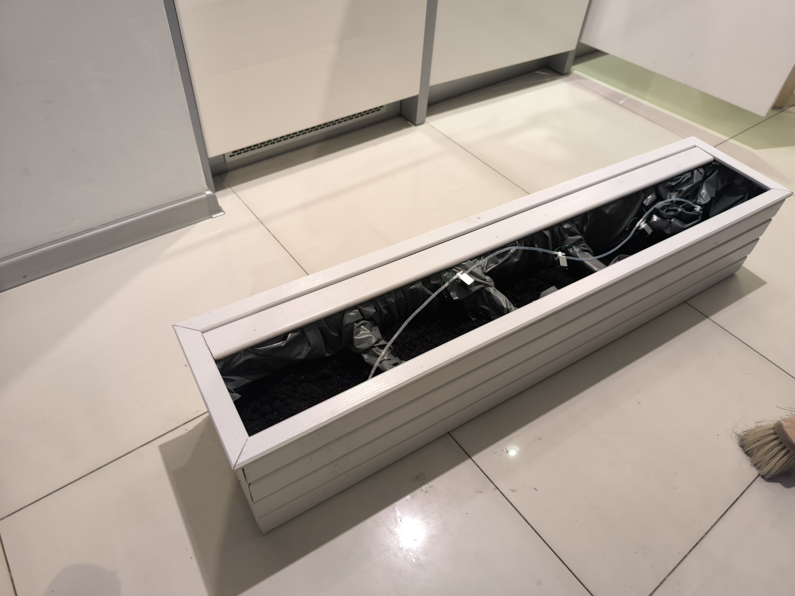
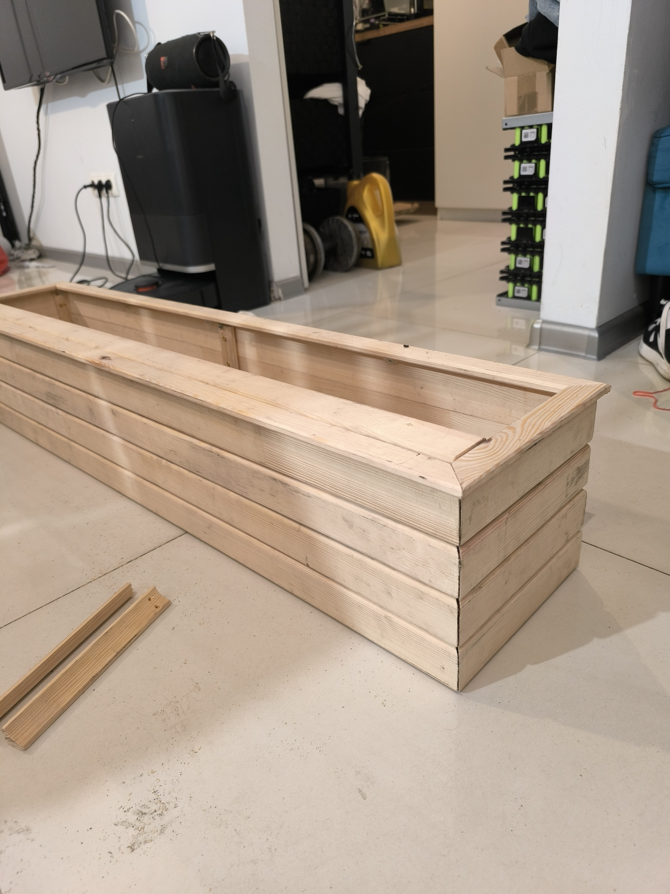
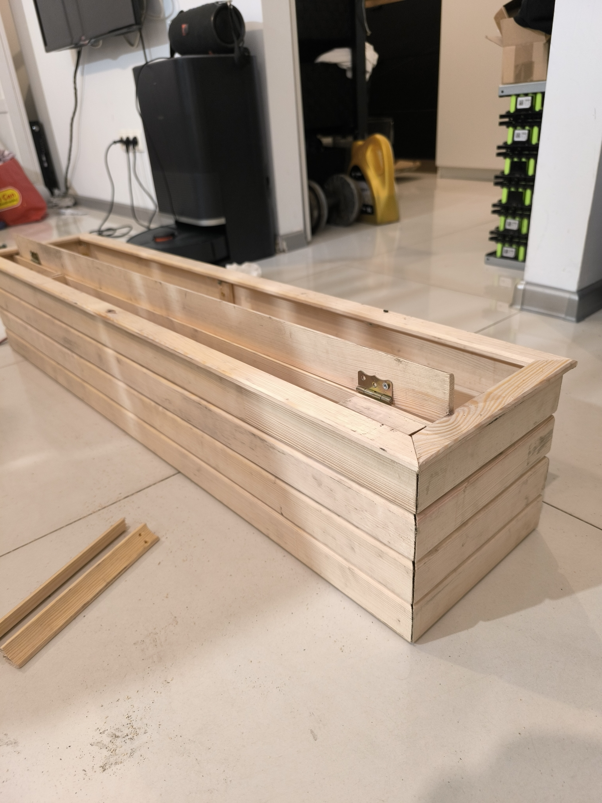
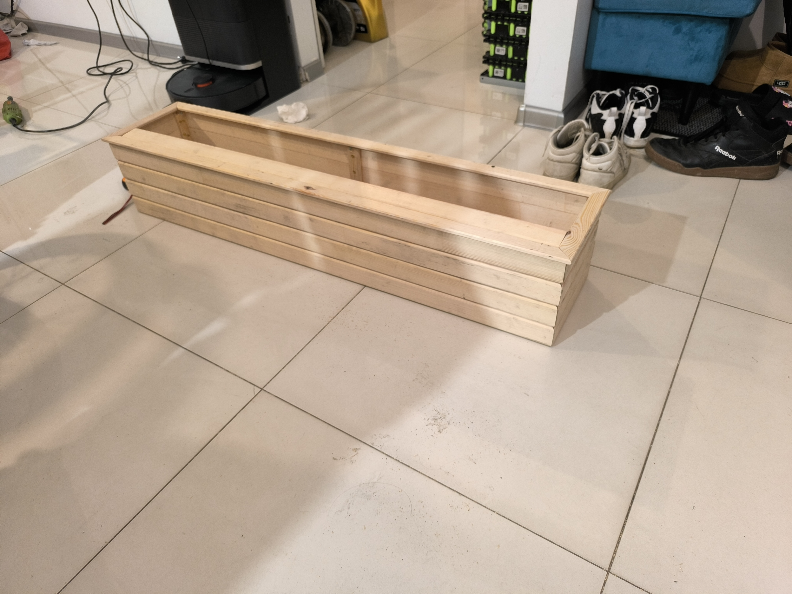
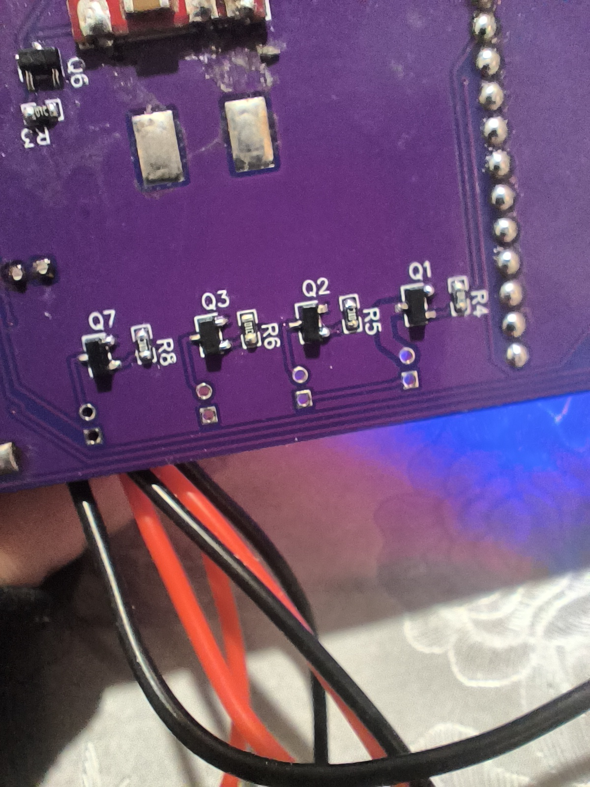

Automatyczne Podlewanie IoT
Recznie robiona drewniana doniczka z 5 miejscami na rosliny, zbiornikiem 10L i pelna automatyka. Uniwersalny kod - dziala rowniez w ogrodzie.
O projekcie
Projekt zrodzil sie z potrzeby automatyzacji podlewania roslin domowych podczas dluższych nieobecnosci. Zamiast kupowac gotowe rozwiazanie, postanowilem zbudowac cos wlasnego - od podstaw, lacznie z drewniana obudowa.
Sercem systemu jest mikrokontroler ESP32, ktory steruje piecioma zaworami elektromagnetycznymi. Kazda roslina moze miec indywidualnie ustawiony harmonogram podlewania - ilosc wody, czestotliwosc, godziny. Przepływomierz pozwala dokladnie kontrolowac ile wody trafia do kazdej doniczki.
System posiada wbudowane czujniki wilgotnosci gleby - mozna ustawic podlewanie warunkowe, ktore uruchomi sie tylko gdy gleba jest zbyt sucha. To oszczedza wode i chroni rosliny przed przelaniem.
Komunikaty glosowe to funkcja, ktora informuje o stanie systemu - przypomina o uzupelnieniu zbiornika, ostrzega o wykrytych bledach, potwierdza wykonanie podlewania. Mozna je wlaczyc lub wylaczyc w panelu konfiguracyjnym.
Caly system konfiguruje sie przez panel webowy dostepny w sieci lokalnej. Mozna tam ustawic harmonogramy, progi wilgotnosci, glosnosc komunikatow, a takze przegladac dziennik zdarzen i bledow. Tryb debug pozwala na szczegolowa diagnostyke w razie problemow.
Caly system dziala na zasilaniu bateryjnym, co czyni go w pelni autonomicznym. Nie wymaga stalego podlaczenia do sieci - wystarczy naladowac akumulator i urzadzenie moze pracowac przez dlugi czas bez nadzoru.
Kod napisalem tak, by byl uniwersalny - ta sama logika moze sterowac podlewaniem w ogrodzie, szklarni czy na balkonie. Wystarczy podlaczyc odpowiednia liczbe zaworow i czujnikow.

Doniczka - wersja finalna

Doniczka finalna - widok

Doniczka finalna - z bliska

Doniczka finalna - inny kadr

Proces budowy

Doniczka niepomalowana

Niepomalowana - widok 2

Niepomalowana - inny kadr

Plytka PCB
.jpg)